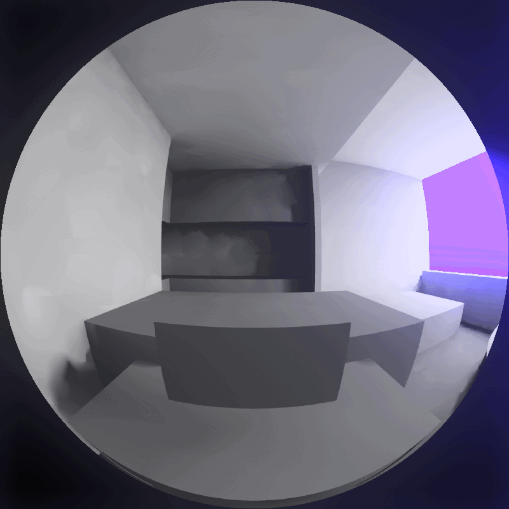
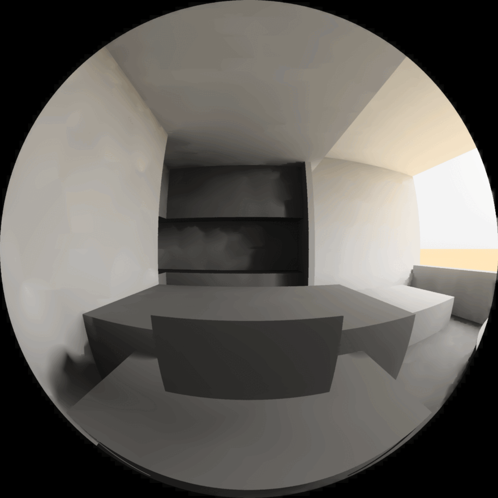
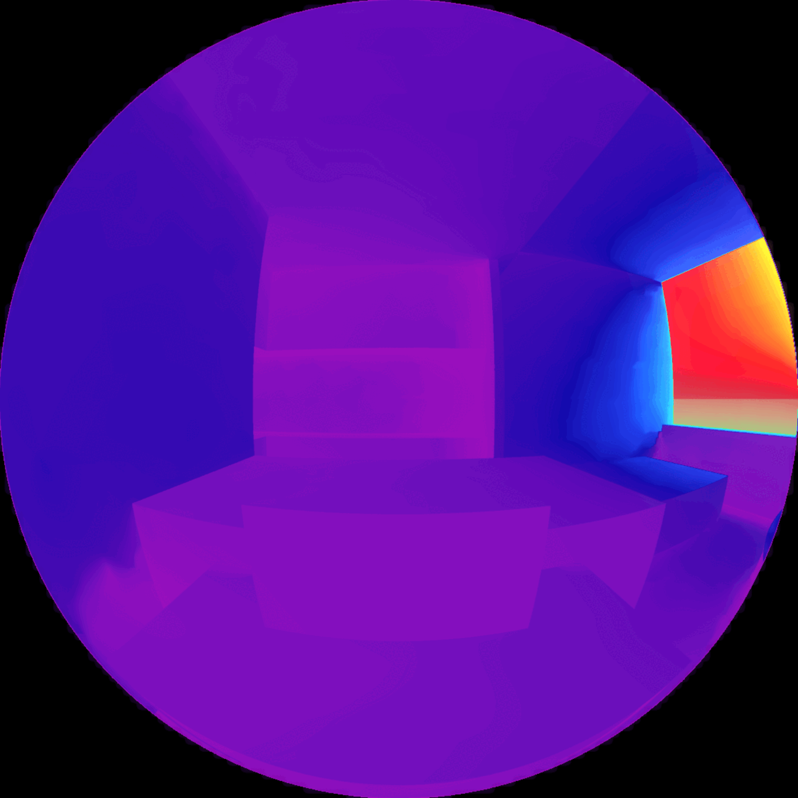

Blendung
Honeybee
⬤ Honeybee führt HDR-basierte Blendungsanalyse durch – berechnet DGP (Daylight Glare Probability) mit Luminanzkarten: imperceptible <0,35 | perceptible 0,35–0,40 | disturbing 0,40–0,45 | intolerable >0,45. Räumlich-zeitlich aufgelöst. Iterative Optimierung von Verglasung, Verschattung, Geometrie. EN 17037/LEED-konform – blendfreie Räume schaffen.
⬤ Honeybee performs HDR-based glare analysis – calculates DGP (Daylight Glare Probability) with luminance maps: imperceptible <0.35 | perceptible 0.35–0.40 | disturbing 0.40–0.45 | intolerable >0.45. Spatially and temporally resolved. Iterative optimization of glazing, shading, geometry. EN 17037/LEED compliant – create glare-free rooms.